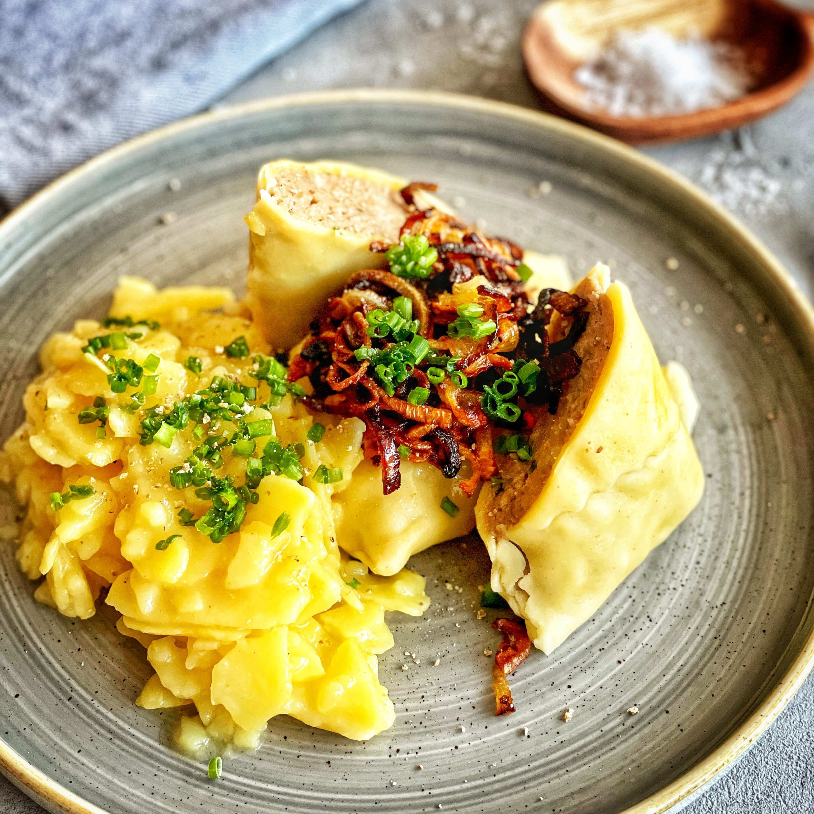

Maultaschen

Great german speciality
Discover the delightful German dish of Maultaschen, where tender pasta pockets are filled with a savory blend of meat, spinach, and herbs. These delicious dumplings are traditionally enjoyed in a rich broth, pan-fried with onions, or baked with cheese. Perfect for any meal, Maultaschen offer a comforting and flavorful taste of German cuisine.
What you will need:
- Ground meat (beef or pork)
- Spinach
- Wonton wrappers or pasta dough
- Onions
- Herbs
How to make it:
- Prepare the filling: In a large bowl, mix ground meat with finely chopped spinach, diced onions, fresh herbs (parsley and chives), salt, and peppe
- Assemble the Maultaschen: Lay out wonton wrappers or rolled-out pasta dough. Place a spoonful of filling in the center of each piece, fold over, and seal the edges with water.
- Cook the Maultaschen: Bring a large pot of salted water to a gentle boil. Add the Maultaschen and cook for about 10 minutes, or until they float to the surface.
- Optional Saute For added flavor, sauté the cooked Maultaschen in a pan with a bit of butter and sliced onions until they are golden brown.
- Serve: Serve the Maultaschen in a rich broth, or enjoy them pan-fried with onions and a sprinkle of fresh herbs.